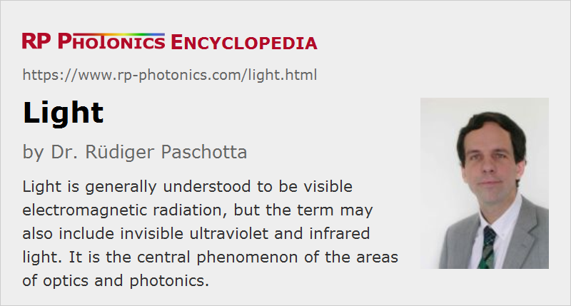

Light
Definition: electromagnetic radiation in the visible spectral range, or sometimes in an extended spectral region
More general term: electromagnetic radiation
More specific terms: monochromatic light, polychromatic light, white light, infrared light, ultraviolet light, laser light, fluorescence light, nonclassical light, fast light, slow light, thermal radiation
German: Licht
Categories: general optics, physical foundations
How to cite the article; suggest additional literature
Author: Dr. Rüdiger Paschotta
Light is generally understood to be electromagnetic radiation in a range of wavelengths where it is visible for human beings, i.e., where it can excite the retina of the human eye to create a visual impression. However, in a technological context the term is often used for a substantially broader spectral range which also includes ultraviolet light and infrared light; those are not visible, but in many respects have similar physical properties.
Light is not only the basis for one of the most essential human senses, but also the central phenomenon of the scientific and technical areas of optics and photonics. Therefore, the dealing with light has been enormously important for the progress of humanity in terms of science, technology and wealth, and the term light also occurs in many hundreds of articles of this encyclopedia.
General Properties of Light
High Frequencies, Potential for High Bandwidth
Light is electromagnetic radiation with extremely high frequencies. For visible light, those frequencies lie roughly between 400 THz and 700 THz. That implies oscillation cycles with durations of only a few femtoseconds.
While some sources emit quasi-monochromatic light, having a well defined optical frequency, others can have a very large optical bandwidth of hundreds of terahertz.
Optical frequencies are far too high to be directly measured with electronic means, for example. Nevertheless, nowadays there are sophisticated methods for phase-coherently relating and optical frequency to a microwave frequency from an atomic clock, for example. That enables one to measure optical frequencies with extremely high precision. Conversely, it is possible to use highly precise optical frequency standards and precisely derive lower-frequency electronic signals from those.
Ultrashort Light Pulses
The potential of light to have an extremely high bandwidth is the basis for the possibility to generate extremely short light pulses (flashes of light). (Inevitably, a short pulse has a bandwidth which is at least of the order of the inverse pulse duration; therefore, there cannot be extremely short pulses not having a large bandwidth, as calculated with a Fourier transform.) For pulse durations of at most a few tens of picoseconds, the term ultrashort pulses is common. The shortest pulses which can be generated with certain mode-locked laser sources have durations around 5 femtoseconds; still shorter durations are possible by applying techniques of nonlinear pulse compression. The optical spectrum then often substantially exceeds the visible range.
Short Wavelengths
The high optical frequencies also imply rather short optical wavelengths according to the relation λ = c / ν, although the velocity of light is rather high: slightly below 300,000 km/s in vacuum.
A consequence of the short optical wavelengths is that diffraction and interference effects (i.e., typical wave phenomena) are not so easily observed; the wave nature of light is thus not very obvious in everyday life. On the other hand, geometrical optics, describing light propagation with rays, is for the same reason a useful approximation in many situations. A collimated light beam with high spatial coherence and a not too small diameter in its focus may propagate with approximately constant beam diameter over substantial distances, and somewhat resemble a ray.
Coherence
Light can exhibit a low or high degree of coherence in two different forms: temporal coherence and spatial coherence. While natural light sources often exhibit a low degree of coherence of both kinds, lasers can generate extremely coherent light. See the article on coherence for more details.
Transverse Oscillations; Polarization States
Just as other kinds of electromagnetic radiation, light waves are transverse waves. That means that the underlying oscillations of the electric and magnetic field are in directions perpendicular to the propagation direction (at least in simple cases, e.g. for propagation through a homogeneous isotropic medium). In some cases, the electric field of light oscillates in a well defined direction; the light is then said to be linearly polarized. Under certain circumstances, for example for propagation through a birefringent optical material, light propagation depends on its direction of polarization.
There are other possible polarization states, including circular and elliptical polarization states; see the article on the polarization of light for more details. There is also unpolarized light with randomly changing polarization directions, not having any preferred direction.
Velocity of Light
Light generally propagates with an extremely high velocity. In vacuum, both the phase velocity and group velocity are slightly below 300,000 km/s. According to established theories of physics, no particles and no information transmission can be faster than that.
When propagating in a medium, lights generally has a different phase velocity and group velocity. In most cases, particularly for usual optical materials, both velocities are substantially reduced. The phase velocity is reduced by the refractive index, while the group velocity is reduced by the group index.
There are certain situations where the phase velocity of light in a medium is even larger than the vacuum velocity of light (fast light → superluminal transmission). Even the group velocity can sometimes be higher than that, but without transferring information with that superluminal speed. On the other hand, there are cases where the group velocity becomes far lower than usual (slow light).
See the articles on the velocity of light and superluminal transmission for more details.
Wave Nature and Particle-like Aspects
In many respects, light phenomena can be very well described with wave optics. In fact, already in the 19th century light has been identified with electromagnetic waves by James Clerk Maxwell, so that even the physical nature of those waves seemed to be pretty clear. It was thus a substantial surprise to find out in the early 20th century that in some respects light does not behave at all as expected for a wave phenomenon. For example, the photoelectric effect was hard to explain based on a wave model. Albert Einstein and others thought about the evidence for a kind of particle nature of light, and early quantum theory was developed in the following years. That lead to a substantially more refined model for light, which finally reconciled the wave and particle nature. The part of physics which deals with quantum effects of light (e.g. squeezed states of light and other kinds of nonclassical light with special quantum noise properties) is called quantum optics.
For the human mind, it still remains difficult to describe light both with waves and a kind of particles (photons), which appear to belong to quite different categories. However, it is now widely acknowledged that the current scientific description of light is quite satisfactory and complete, well consistent with a very wide range of observations, and not in conflict with any well established observations.
Energy Transport
Light transports energy. For example, Earth receives huge amounts of energy per day in the form of sunlight; a tiny fraction of that, converted to useful forms like electrical energy, could in principle satisfy the whole energy demands on Earth. It is possible to directly convert light into electrical energy using photovoltaic cells; the conversion efficiency is often of the order of 20%, but can be significantly larger in some cases, e.g. with tandem cells.
Because light can be tightly focused to small spots, provided that it exhibits a high degree of spatial coherence, it allows one to deposit energy in highly controlled ways.
A further important aspect is the concentration of light energy in the time domain; intense ultrashort pulse may have enormously short pulse duration, and can thus have extremely high peak powers even if the pulse energy is quite moderate. This combined with the focusing to tiny spatial regions is widely exploited in laser material processing.
Light may easily carry sufficient amounts of energy for causing hazards, particularly to eyes. See the article on laser safety for details.
Momentum Transport
Light also carries mechanical momentum; the transfer of such momentum, e.g. in absorption processes, leads to light forces. Angular momentum can also be transferred.
Nonlinear Effect
While the intensities of natural light are usually far too low to exhibit any nonlinear effects in materials, significant or even very strong nonlinearities can occur in conjunction with laser light. For example, that can lead to nonlinear frequency conversion, where light is converted to other optical frequencies. See the article on nonlinear optics for details.
Light Sources
Light can be generated by a wide range of sources. The most important ones are briefly explained in the following:
- Many natural light sources and some technical sources such as incandescent lamps are based on thermal radiation. For efficiently producing visible light, that requires temperatures of well above 1000 K, so that the thermal energy kB T is no longer far below the photon energy hν.
- Relatively efficient light generation is possible with electric discharges in gases, used in various kinds of gas discharge lamps.
- Fluorescent lamps are also based on a gas discharge, but utilize a further conversion of the generated mostly ultraviolet light to visible light in a phosphor.
- There is a wide range of laser sources, spanning enormously large parameter regions e.g. in terms of output power, spectral width (bandwidth), continuous emission or pulse generation with different pulse durations, etc.
Characterization of Light
There are technical means for characterizing light in many different aspects:
- There are optical power meters and optical energy meters, which may be applied, for example, for continuous-wave and pulsed lasers. There are various kinds of photodetectors such as photodiodes for detecting light intensities.
- The wavelength of monochromatic light can be very accurately measured with wavemeters. Various kinds of spectrometers exist for measuring optical spectra. The spectral composition of light influences the perception of colors; such aspects are quantitatively assessed in the field of colorimetry.
- Spatial properties of laser beams including their beam quality can be measured with various kinds of beam profilers.
- Temporal properties, in particular pulse durations, can be measured with instruments like optical autocorrelators and with frequency-resolved optical gating (FROG) setups.
- With different kinds of interferometers, one can very precisely measure various properties of light, including spatial and temporal properties, also coherence properties.
See also the articles on optical metrology, radiometry and photometry.
Questions and Comments from Users
Here you can submit questions and comments. As far as they get accepted by the author, they will appear above this paragraph together with the author’s answer. The author will decide on acceptance based on certain criteria. Essentially, the issue must be of sufficiently broad interest.
Please do not enter personal data here; we would otherwise delete it soon. (See also our privacy declaration.) If you wish to receive personal feedback or consultancy from the author, please contact him e.g. via e-mail.
By submitting the information, you give your consent to the potential publication of your inputs on our website according to our rules. (If you later retract your consent, we will delete those inputs.) As your inputs are first reviewed by the author, they may be published with some delay.
See also: optics, infrared light, ultraviolet light, laser light, photonics, ultrashort pulses, polarization of light
and other articles in the categories general optics, physical foundations
|  |
If you like this page, please share the link with your friends and colleagues, e.g. via social media:
These sharing buttons are implemented in a privacy-friendly way!